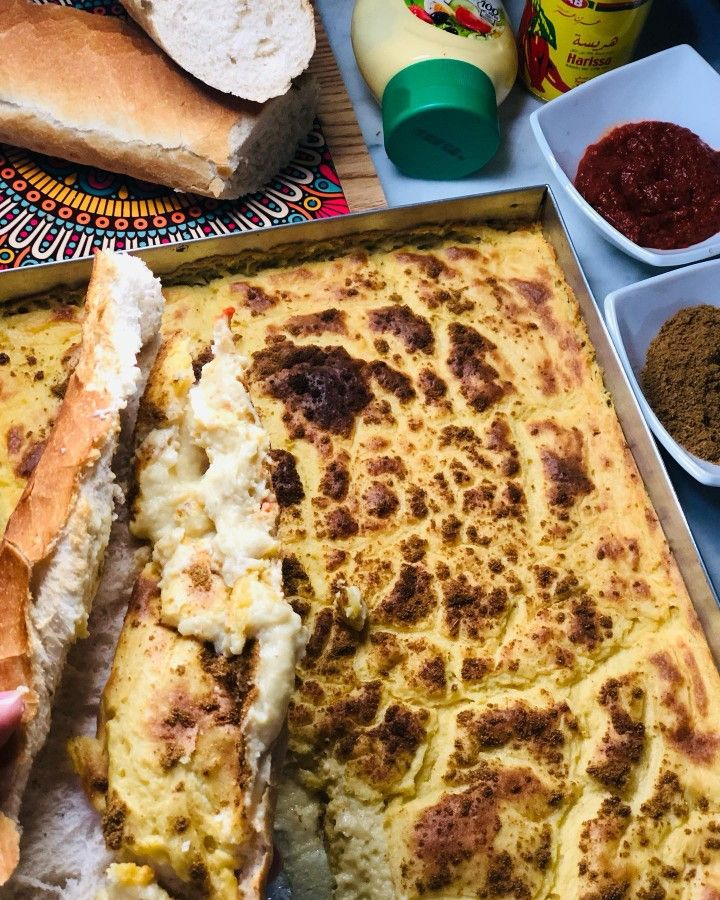

Garantika

Description
Garantika the infamous algerien recipe if
you don t know it you can t call your self
algerien the favriot of the poor and rich
alike delicous and simple
Ingredients
- unroasted chickpia flour
- oil
- water
- eggs
steps
- Preheat oven to 500°F/260°C,Lightly oil the baking pan
- In a large bowl, place all the dry ingredients except black pepper
. Add the egg, oil, milk and mix it until smooth.
Add water progressively and mix all ingredients.
Season with black pepper and adjust seasoning to your liking.
- Gently pour the thin batter into the greased pans and place it into the oven.
Cook for 20-30 minutes (depending on the size of the pan)
or until a thin crust is formed and there are brown patches on the surface.
- Remove from the oven and allow to cool for a few minutes.
Serve warm with cumin and harissa paste.
It can also be served inside a sandwich (baguette) with a dash of harissa paste.
Bonne dégustation !